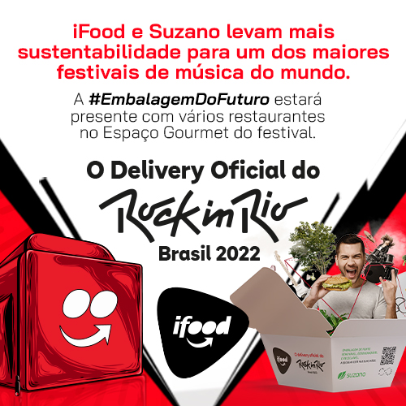
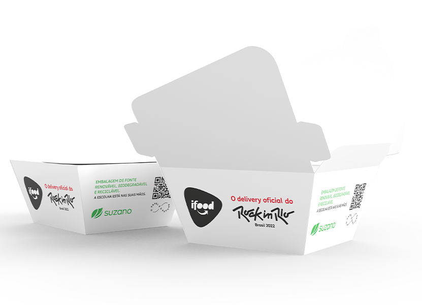
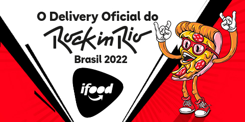
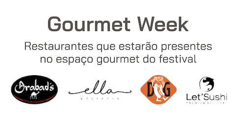
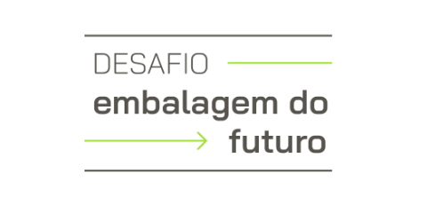
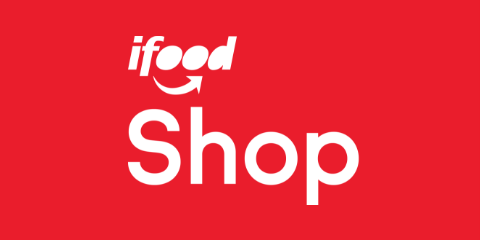

Esse pedido foi feito pela natureza.
Nunca foi tão urgente atender ao meio ambiente. De tantos pedidos que recebemos, criar uma cadeia de produção e consumo mais sustentável está entre nossas prioridades.
Alimentar o futuro
do mundo e renovar
a vida a partir da árvore são propósitos que se complementam nessa parceria. E nós convidamos você para se juntar a nós.
A embalagem do futuro

· Papel ·
· Matéria-prima de fonte renovável ·
· Biodegradável ·
· Reciclável ·
· Zero plástico ·
Uma entrega que vai além da embalagem
Nossos projetos



